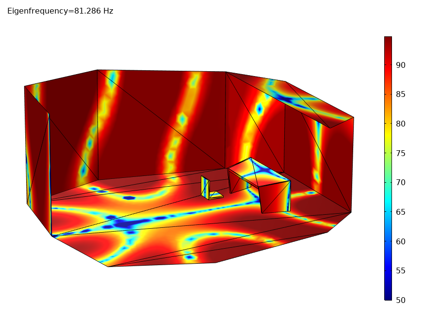
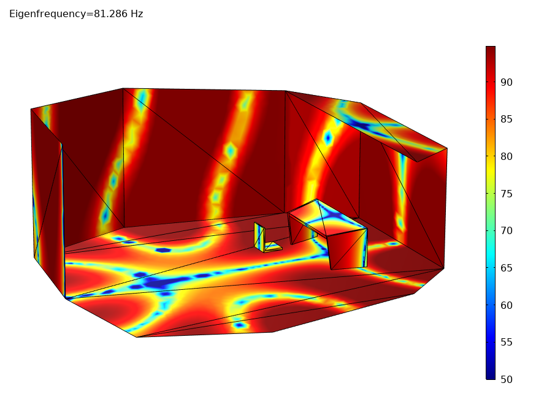

Rediseño Auditorio Aula Magna (Caracas)
Rediseño integral del auditorio de la Universidad de Caracas como sala sinfónica, adaptándose a su área original y fuentes de ruido. Con capacidad para 1334 espectadores y 84 músicos, se calcularon parámetros como TR (Sabine) e ITDG para la selección de materiales según el código de edificación local.


 
